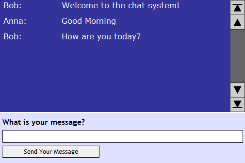
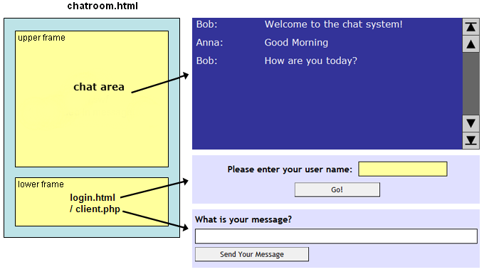
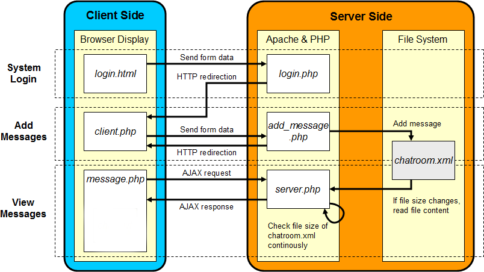
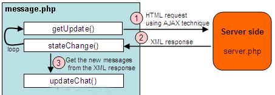
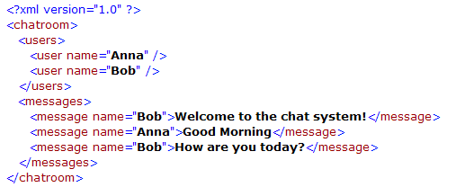
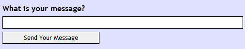
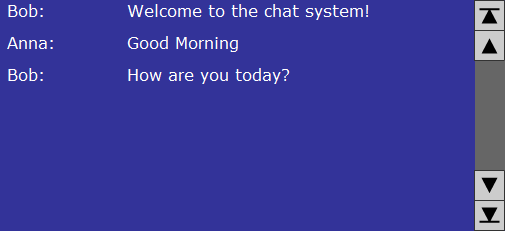
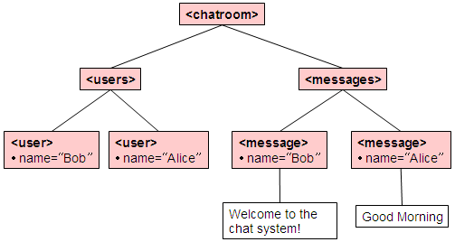

// Transfer from form data into cookie
setcookie("name", $_POST["name"]);
header("Location: client.php");
<message name="... name here ...">... message content here ...</message>

$xmlh->openFile();
// Get the 'messages' element as the current element $messages_element = $xmlh->getElement("messages"); // Create a 'message' element for each message $message_element = $xmlh->addElement($messages_element, "message");
// Add the name $xmlh->setAttribute($message_element, "name", $name); // Add the content of the message $xmlh->addText($message_element, $message);
$xmlh->saveFile();
set_time_limit(60);


Bob: Welcome to the chat system! Alice: Good Morning
